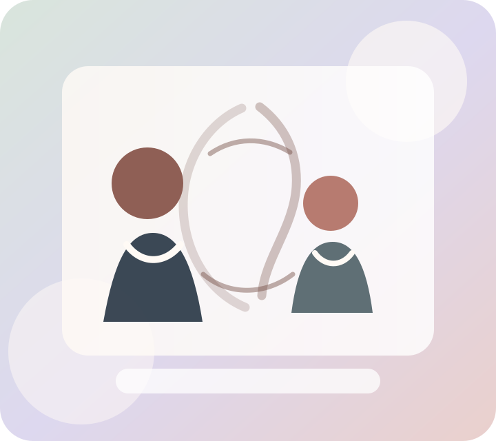
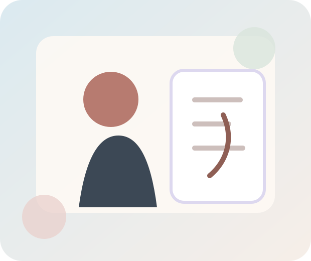

Free case review
Submit a free case review with Case Directors to learn whether your child may be a candidate for the non-surgical scoliosis program. If not eligible, the team states they will guide families to alternative care options.
Non-surgical scoliosis treatment for children and teens
If your child has scoliosis, you are not alone. Scoliosis Care Centers helps families understand their options with compassionate guidance, non-surgical bracing and rehab, careful monitoring, and care designed around your child.

Support for your child’s scoliosis journey
A scoliosis diagnosis can feel overwhelming, especially when you are trying to make decisions for a growing child. The original Scoliosis Care Centers page describes a science-based treatment center focused entirely on non-surgical scoliosis reduction using SOSORT-guided bracing and rehab.
The goal of this page is to make the next step easier: understand the options, ask thoughtful questions, and connect with a team that can review your child’s situation.
How we help
These services and method elements are preserved from the original page and organized so parents can quickly understand what each one means.
Submit a free case review with Case Directors to learn whether your child may be a candidate for the non-surgical scoliosis program. If not eligible, the team states they will guide families to alternative care options.
The original site describes MRI-guided bracing, SOSORT-guided bracing, advanced 3D scanning, and customized medical devices for each patient.
Scoliosis Care Centers describes rehab, scoliosis exercises, physiotherapy, and methods intended to support posture, rib hump, rotation, and Cobb angle goals.
ScoliSnap™ Screen and ScoliSnap™ Monitor events are presented as early-detection and monitoring resources for families who want to catch scoliosis earlier.
The original home page highlights radiation-free standing MRI monitoring and treatment tracking as part of its approach.
Created in San Jose, this method is described as a comprehensive non-surgical approach for curve reduction, posture transformation, rib hump improvement, and long-term results.

What to expect
Why parents choose this approach
The original site is direct about what the practice is—and what it is not. This replacement keeps that factual positioning while making it easier for parents to scan.
Real patient and parent stories
Testimonials are preserved from the existing page. Individual experiences vary, and they should not be read as a guarantee of results.
“We wish that our journey had started at Scoliosis Care Centers. Under the treatment management of our surgeon and later that of a supposed scoliosis specialist, we watched our daughter’s curve balloon to 62º... In a short 3 months, the 62º curve had reduced by 20º and we finally felt that we were in capable hands.”
★★★★★
“Their utmost care, kindness, patience, and knowledge has brought my family and me in for further treatment... The staff makes you feel at home and I would highly recommend them!”
★★★★★
“After I discovered them and moved to California for treatment, I am happy to say my life has returned back to an active, healthy, and normal routine.”
★★★★★
“The doctors at Scoliosis Care Centers™ did not just save my daughter’s life. They saved the quality of her life...”
★★★★★
“It feels like summer camp there and I meet many people that I can relate to. The staff is great, friendly, fun, and very helpful.”
★★★★★
“Scoliosis Care Centers™ didn’t just save my life; they GAVE me my life back... Thank you, Scoliosis Care Centers™ for saving me.”
★★★★★
“I traveled over 5,000 miles to get treatment at Scoliosis Care Centers™ — and I’d do it again. They offer honest, personalized care...”
Early detection and monitoring
The original page explains that ScoliSnap™ Screen and ScoliSnap™ Monitor events are intended to detect scoliosis at earlier stages and help families monitor changes. Early information can help parents understand options without panic.
Schedule your ScoliSnap™ nowThis page avoids promises of a cure or guaranteed outcomes. Your child’s care plan should be based on an individualized clinical review.
Locations and contact
Prefer to call? The contact page invites families to speak directly with the team if they would rather talk through questions first.
6050 Hellyer Ave, Unit 100
San Jose, CA 95138
Clinic hours: Mon-Fri: 9 AM – 5 PM
Local phone: +1 (408) 379-0133
Get directions5824 NW 135th Street
Oklahoma City, OK 73142
Clinic hours: Mon-Fri: 9 AM – 5 PM
Local phone: +1 (405) 898-6295
Get directionsToll free: +1 (833) 557-2654
Email: info@scoliosiscarecenters.com
Fax: +1 (408) 379-3931
Start full case reviewQuestions parents often ask
Scoliosis Care Centers focuses on children and teens with scoliosis and supports families seeking non-surgical options, screening, observation, bracing, rehab, and monitoring guidance.
The contact page states that no imaging is needed to begin a quick inquiry. Families with imaging can also begin a fuller free case review.
No guarantee is made here. Treatment recommendations and outcomes depend on the child, curve pattern, growth stage, and clinical findings. Families should review individual guidance with the care team and licensed clinicians.
The original site describes a curve correction program, scoliosis brace treatment, scoliosis screenings, scoliosis monitoring, ScoliSnap™ Screen and Monitor events, MRI-guided bracing, SOSORT-guided bracing and rehab, and radiation-free standing MRI monitoring.
A gentle next step
Start with a free case review or call the team. You can ask questions, share what you know, and get compassionate guidance about a possible path forward.